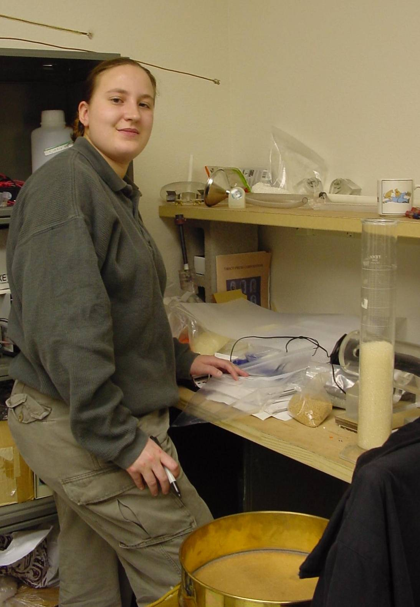

Braunen Smith
Braunen Smith began working at New
Mexico Resonance in May 2000 while working on her B.S. in Physics from the University of
New Mexico. After graduation, she has continued to work on a variety of projects
there. Her current projects involve studying the flow of axially segregating
granular materials, analysis of brain images from a hypoxia study, and writing the users'
manual for a permanent magnet set-up created for NASA. |
 |
.